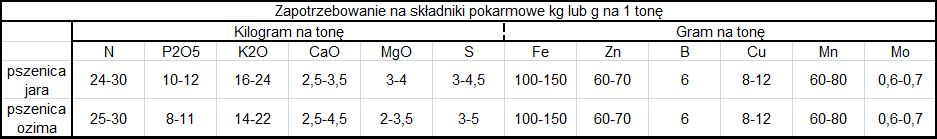

Nawożenie P, K, Ca, Mg
Podstawą przy planowaniu poziomu nawożenia jest analiza chemiczna gleby,
zwierająca informacje o pH oraz zasobności w fosfor (P), potas (K) i magnez (Mg).
Odczyn gleby
Efektywność wykorzystania nawożenia uzależniona jest od poziomu pH. Gdy pH wynosi 6,5 – 7 dostępność składników
dla roślin jest najlepsza. Przy lekkim zakwaszeniu gleby – ph poniżej 6,5, a szczególnie przy odczynie
kwaśnym – 5,5 pobieranie P, K i N jest ograniczone. W takich warunkach najważniejsze jest poprawienie warunków
pH poprzez wapnowanie i uzupełnienie Mg.
Poniżej przedstawiona została tabela zapotrzebowania na składniki pokarmowe.

| N | Azot |
| P2O5 | Dekatlenek tetrafosforu |
| K2O | Tlenek potasu |
| CaO | Tlenek wapnia |
| MgO | Tlenek magnezu |
| S | Siarka |
| Fe | Żelazo |
| Zn | Cynk |
| B | Bor |
| Cu | Miedź |
| Mn | Mangan |
| Mo | Molibden |